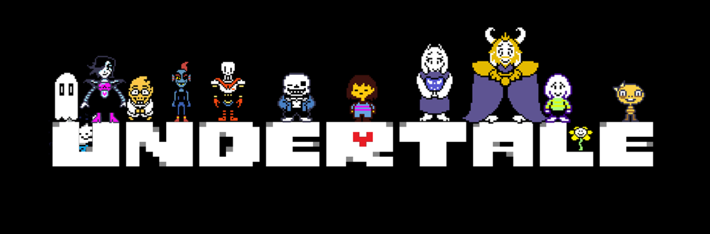

Undertale
Undertale, a pesar de su estética minimalista basada en el arte en píxeles, es una obra maestra profundamente compleja que rompe por completo con las convenciones tradicionales de los videojuegos. En lugar de empujarte a erradicar enemigos de forma indiscriminada, te ofrece la opción de no recurrir a la violencia, demostrando que la agresión no siempre es el camino y confrontándote directamente por todas aquellas veces en las que, en otros juegos, destruiste monstruos sin vacilar. Es una historia sobre la empatía, la amistad, el perdón y el peso inquebrantable de la determinación. La trama se remonta a una época ancestral en la que humanos y monstruos coexistían en paz en la superficie. Tras desatarse una trágica guerra, la humanidad venció y confinó a los monstruos en el Subsuelo, sellando la única salida mediante una barrera mágica que solo puede romperse con el poder de siete almas humanas. La historia comienza cuando nuestro protagonista cae accidentalmente por una grieta en el Monte Ebott, la única entrada conocida al Inframunto. A medida que exploras este extraño mundo, descubres que el destino de todos sus habitantes depende enteramente de tus acciones: puedes elegir la compasión y perdonar a cada criatura, o ceder a la violencia.

Lo fascinante de su banda sonora —creada por Toby Fox— es cómo canaliza este constante dilema moral. La música transita con soltura entre ritmos retro de 8-bits, sintetizadores modernos y melodías de piano que se entrelazan de forma brillante, conectando los temas de cada personaje para revelar los anhelos, miedos y cicatrices que ocultan. Cada pieza nos transmite que detrás de cada "monstruo" hay una historia que merece ser escuchada, haciendo que una victoria pacífica se sienta entrañable y cálida, mientras que la decisión de destruir a tus rivales transforme la música en un eco frío, melancólico y perturbador que te juzga por tus propios actos. Un ejemplo de esto es el tema principal del juego, que parece en cierta manera como si fuera una melodía que refleja la esencia de cada personaje.